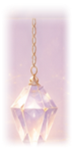

Энергии Вселенной
Гид дня
Гороскоп
23.07 – 22.08
Ваша карта дня
Прикоснитесь к колоде, чтобы открыть энергию дня
Новое послание через: 11ч 59м
Моя коллекция
(0/71)
Видеотека

Telegram-канал
Мысли и послания в канале
172 женщины в потоке